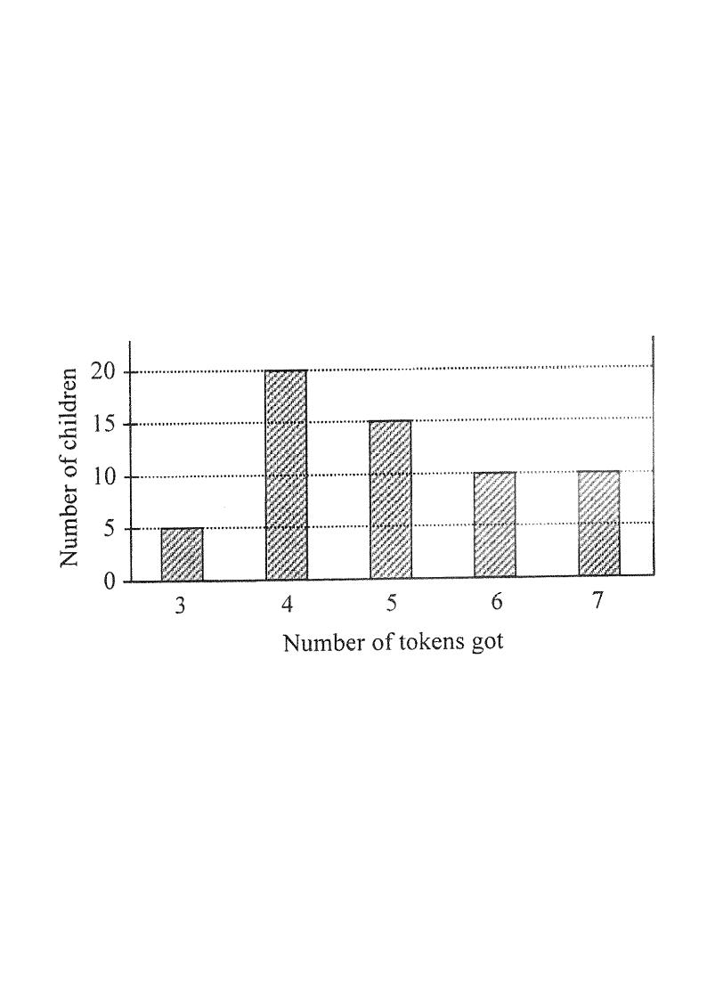

Follow the steps on the right — the chart highlights what each step uses.
Tap or scroll through the steps on the right.
The bar chart below shows the distribution of the numbers of tokens got by a group of children in a game. If a child is randomly selected from the group, find the probability that the selected child gets fewer than 5 tokens in the game.

From the chart, the numbers of children getting 3,
4, 5, 6, 7 tokens are respectively:
\(5,\;20,\;15,\;10,\;10\)
Hint: the height of each bar gives the number of children for that number of tokens.
Total children in the group:
\(5 + 20 + 15 + 10 + 10 = 60\)
Hint: every child is equally likely to be selected,
so the total number of possible outcomes is 60.
"Fewer than 5 tokens" means the child got 3 or 4 tokens.
Number of favourable outcomes:
\(5 + 20 = 25\)
Hint: 5 tokens is not fewer than 5 tokens — do not include the bar of 5.
For equally likely outcomes,
\(P = \dfrac{\text{number of favourable outcomes}}{\text{total number of possible outcomes}}\)
\(P = \dfrac{25}{60} = \dfrac{5}{12}\)
Hint: cancel the common factor 5 from numerator and denominator.
\(\dfrac{25}{60} = \dfrac{5}{12}\), which matches option C.
Hint: A is \(\frac{2}{3}\) (counting 3,
4 and 5 tokens), a classic trap.
Question. The bar chart shows the numbers of badges owned by the \(70\) children in a club: \(2\) badges — \(8\) children, \(3\) badges — \(24\) children, \(4\) badges — \(18\) children, \(5\) badges — \(12\) children, \(6\) badges — \(8\) children. A child is chosen at random. Find the probability that the child owns more than \(4\) badges.